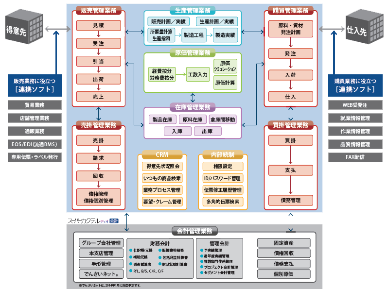

面向批发零售行业的ERP软件“招财猫云运营平台”不仅大幅提升物产店零售业务效率，及时掌握门店库存和销售数据，还可以合理安排配货补货或商品促销，为从事商品批发零售经营的中小企业量身打造。
在批发零售行业周围的恶劣环境中是否存在这样的问题？
-
供应商与经销商信息孤岛，供销脱节
消费者的价值观与生活方式因疫情影响，对商品需求发送了结构性变化，根据疫情发展阶段，商品需求可以分为“快速回稳”、“短期囤货”、“报复消费”等类型。由于供应商与经销商信息孤岛，无法实现供销信息共享，造成部分商品阶段性、区域性缺货
-
库存管理信息未智能化，货物过期过量浪费资金
目前经销商信息化主要在销售收银环节，未打造成供销存一体化系统，库存信息未智能化体现，造成采购过量，销售周期过长；未及时盘点，部分商品未及时销售而过期，造成资金积压和货物的浪费。
-
配送体系未共享，自养车队成本高
供应商和部分经销商提供配送服务，由于独立运营，配送量不足，车辆和人员经常空闲；同时，由于配送零散，司机对部分线路不熟悉，违章、违规停车，这样车队运营成本高。
用招财猫云运营平台为物产批发零售行业解决难题！
基于新技术、新设备、新模式，为经销商提供信息化、智能化软件平台。本平台打破零售店信息孤岛，贯穿供销产业链，能够给员工赋能、提升员工效率，能够减低运营风险、提高企业竞争力。
零售门店敏捷运营
利用先进的新零售解决方案完善购物体验，优化商品结构、迭代契合消费者的经营模式满足当今消费者水涨船高的便捷、快速、自主的消费需求。
提升零售客户体验
应用人工智能为消费者提供量身定制的全渠道市场营销资讯及商品服务，优化线下商品结构、开展自有品牌、熟食、半成品等新聚客品类，降低企业运营成本，提升购物体验感、重塑顾客到店理由、把门店做出差异化与人情味
重塑零售供应链
云零售平台打通供应链，对接品牌商货源，简化进货流程，大大节省了经销商的时间、精力与体力，有助于实现零售供应链优化的“效率创新”，最大程度地降低公共事件对零售供应链的影响。
面向批发零售行业的ERP软件“招财猫云运营平台”的特点
食品業界の商慣習に対応
賞味期限管理や店舗・帳合先管理、トレーサビリティなど、食品業界特有の商慣習に対応。
短期間・低コストでのシステム導入が可能です。

販売管理・生産管理・原価管理を包括
調達から生産、販売までの業務を統合。製販一体の計画策定が可能です。現場の判断力を高め、売上機会の損失や過剰在庫によるロスを防止します。
業務単位での段階的な導入が可能
統合版だけでなく、「生産」「販売」などの業務単位でも導入できます。既存システムとの連携や段階的な導入が可能、お客様のご予算・ご要望に合わせて柔軟に対応します。
食品業向けERPパッケージ 「スーパーカクテルデュオFOODs」 のシステム概要
柔軟性と拡張性に優れており業務単位の導入や外部システム連携が可能
スーパーカクテル デュオFOODs は、業務単位での導入、カスタマイズ、外部システムとの連携などを柔軟に行えます。短期間・低コストで御社の業務モデルにフィットしたシステムの構築が可能で、業務の変化にあわせた拡張性も備えています。モノの流れと情報の流れを一致させ、現場の判断力を高めます。

食品業向けERPパッケージ 「スーパーカクテルデュオFOODs」 の機能
多彩な機能のご紹介
調達から生産、販売まで、すべての業務を一元管理。食品業界に特有の商慣習や取引形態に対応した使いやすい機能を標準でご用意しています。管理レベルや業務運用にあわせた導入で、着実に効果を発揮します。
- 食品業界の商慣習に対応
- 出荷ロットの逆転防止や鮮度保証の要求に対応
- 債権の管理水準向上で、健全な取引をサポート
EOSやEDI受注、直送受注、取り寄せ受注など、さまざまな受注形態に対応。得意先は、請求先や納品先、店舗などの階層ごとに管理でき、帳合先の設定も可能です。また、荷姿別・期間別の契約単価、特売単価の設定も柔軟に行えます。
得意先別・商品別の消費期限管理、ロット逆転防止や単一ロット指定など、取引条件に応じてピッキング処理を行えます。顧客ニーズに対応し、得意先との信頼構築を支援します。
受注入力する際に与信限度と債権残高をチェックし、限度額を超えた債権の発生を未然に防止。また、滞留債権の年齢を確認でき、健全な債権回収を支援します。
- 確定・見込での生産計画や計画変更にも柔軟に対応
- 多階層構成と版数管理に対応したレシピ管理
- 食の安心・安全をバックアップ
得意先からの注文変更や営業部門からの納期短縮要望など、生産計画の変更にも柔軟に対応。生産計画はExcelで取り込み製造指示が行えます。また、見込の生産計画をもとに原材料の所要量を算出できます。
製品構成マスタ（レシピ）は、階層管理・版数管理・使用期限の設定が可能。構成品が半製品の場合はさらに下位に構成を登録でき、版数は999版ま履歴管理できます。
バックトレース、フォワードトレースを装備しており、食の安心・安全をバックアップ。顧客からの突然の問合せ、万が一の場合でも迅速に対応できます。
- 原材料から中間品・製品まで在庫を一元管理
- 機会損失を防止し、ムダのない在庫管理を実現
製造時の原材料在庫払い出しや製品在庫の増加などリアルタイムに把握でき、製版一体の在庫計画を実現。製品の生い立ち管理や、出荷先の検索など、食品トレーサビリティを支援します。
受注残・発注残・払出予定・製造予定を加味して、未来在庫を予測。在庫不足による販売機会損失を防ぎます。また、賞味期限切れ管理による在庫ロス防止や、不動在庫の適正化など支援します。
- 運用状況に応じた原価計算が可能
- 多彩な統計資料を標準で装備
- 優れたシミュレーション機能
原価（経費・労務費・原材料費など）の按分基準は、管理レベルや運用状況にあわせて、標準工数、実際工数、製品出来高から選択できます。
予定原価と実際原価を比較できる「製品実績比較表」など多彩な統計資料を標準で装備。計画に対する製造数や歩留率などチェックでき、PDCAサイクルの確立を支援します。
過年度の実績や計画をベースに、変動値（原料価格の上昇など）を設定して、原価・収益に与える影響を分析。環境の変化にスピーディに対応し、迅速で的確な経営判断を支援します。
【原価シミュレーションの活用例】
・新製品開発時の売上単価・予定原価の算定
・原料価格変動を考慮した売上単価の再検討
・損益分岐点分析により「どの製品をいくつ売るか」といった販売計画の策定
- 業務品質を高める内部統制機能
- 全帳票のペーパレス化と2次加工を支援
- 効率的な運用を総合的にサポート
ログインIDの設定はもちろん、ユーザーごとの利用権限をきめ細やかく設定でき、セキュリティ対策に有効。また、入力ミスを検知するための「伝票検索機能」を備えています。
すべての帳票はプレビュー表示およびPDF出力が可能。また、必要な項目だけを EXCEL や XML 形式にデータ抽出して2次加工も簡単に行えます。
マウスレスで使いやすい操作性、豊富な検索機能など、日々の業務を効率化。桁数、計上基準など、自社の運用基準にあわせたシステム設定も可能です。
「スーパーカクテルデュオ FOODs」「スーパーカクテルデュオ FOODs店舗販売」が、日本食糧新聞社の第18回「日食優秀食品 機械資材・素材賞」に選ばれました。
「日食優秀食品 機械資材・素材賞」とは
「日食優秀食品機械資材・素材賞」は、株式会社日本食糧新聞社が実施している表彰事業の一つで、食品の包装などの資材、添加物や香料・機能性原料・食品原料などの素材、品質と効率の向上に役立ち食品業界をサポートする機械を対象として授賞されています。
受賞の詳細は、第18回「日食優秀食品 機械資材・素材賞」受賞ニュース（内田洋行サイト）をご覧ください。
食品業向けERPパッケージ 「スーパーカクテルデュオFOODs」カタログダウンロード